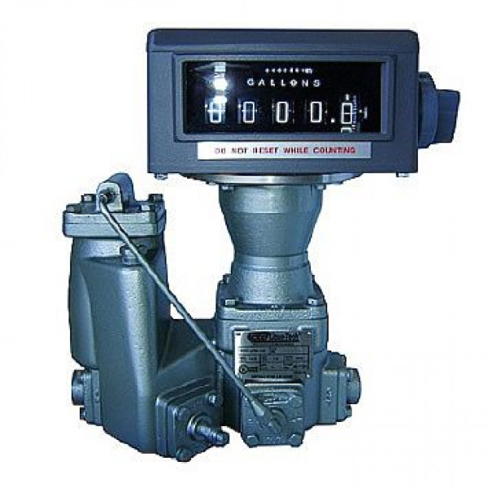

Счётчик жидкости LPM‑102
Артикул: 0022
LIQUA-TECH
Раздел: Счётчики и расходомеры СУГ · АГЗС
Цена и наличие — по запросу. Поставляем оригинал и аналоги. Доставка по России.
Описание
Счётчик жидкости LPM‑102 производства LIQUA-TECH — позиция из раздела «Счётчики и расходомеры СУГ» для АГЗС. Компания SYNDICAT поставляет оборудование и комплектующие для автозаправочных и газозаправочных станций по всей России. Цена и наличие «Счётчик жидкости LPM‑102» — по запросу: оставьте заявку или позвоните, подберём оригинал или аналог и рассчитаем доставку.